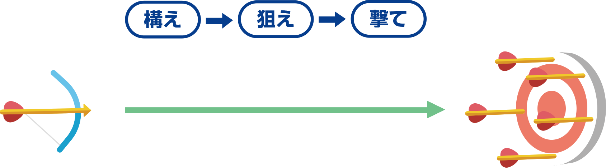
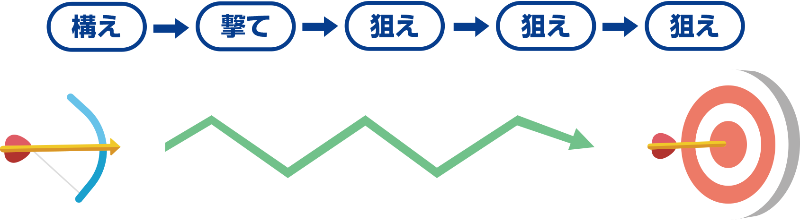

私たちのやり方で
私たちのやり方とは、「アジャイルなプロセス」と「妥協のないエンジニアリング」によってお客さまに価値を提供し続けることです。
「お客さまと弊社がハッピーになる」ことを目的とし、私たちはこの10年間、アジャイル開発で多くの信頼と実績を築いてきました。それは、アジャイル開発の良さを真摯に守り、取り組んできたことを、お客さまからご評価頂いたからです。
開発がアジャイルであるということは、利用者と開発者が協調し、フィードバックに基づいた調整を行い続けることです。従来の開発のような、期限内に仕様書通りのものを開発し納品するのではなく、利用者と私たちが一つのチームになり共に問題解決に挑みます。
小さな機能単位で実装・デモを繰り返しながら、利用者と共に本当に必要としているものを模索しながらサービスを成長させていきます。
従来の開発
従来の開発は、「構え」「狙え」「撃て」で的を射るという一発勝負でした。特に、ソフトウェア開発の世界では的 (ここではつまり、お客さまの要求) が動くことが頻繁にあり、的の中心に矢を中てるのは至難の業です。
アジャイル開発
アジャイル開発は、「構え」「撃て」で矢を放った後も、矢の向きを的に目がけて軌道修正し続けます。こうすることで、的が動いたとしても的の中心に矢を中てることができます。
